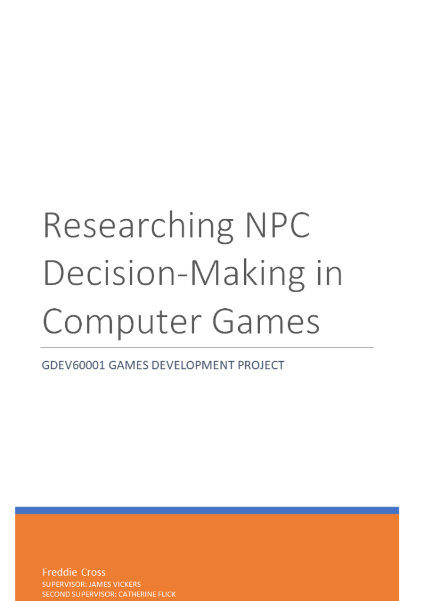

Dissertation Project (NPC AI Research Paper)

Read here: View Research Paper on SharePoint
This dissertation investigates the feasibility of a hybrid NPC decision-making architecture designed to balance global scheduling with autonomous, player-disruptable behaviour. By evaluating traditional Finite State Machines and Goal-Oriented Action Planning within the literature review, this research identifies a critical need for a system that maintains the reliability of scripted routines while allowing for the emergence of dynamic reactions.
The implemented artefact utilises Unreal Engine 5.7’s State Trees and Smart Objects to construct a Hierarchical Finite State Machine. This modular system allows NPCs to execute synchronised 24-hour schedules while maintaining the capacity for “fallback” logic during player interference. Experimental results from ten participants confirmed high technical fidelity with 100% of observers identifying scheduled state changes and 90% witnessing successful behaviour recovery after disruption. Despite this functional success, the agents achieved a mean intelligence rating of 3.3/5. The discussion explores this “Intelligence Gap” attributing it to the “Hive Mind” effect of perfect synchronisation and UI signifier ambiguities identified during playtesting. The study concludes that while the hybrid paradigm is a robust solution for maintaining NPC autonomy and schedule resilience, the perception of intelligence is heavily dependent on the quality of environmental signalling and the mitigation of robotic, synchronised movement.